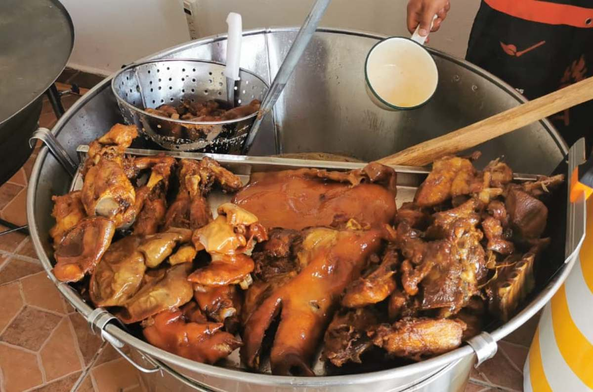
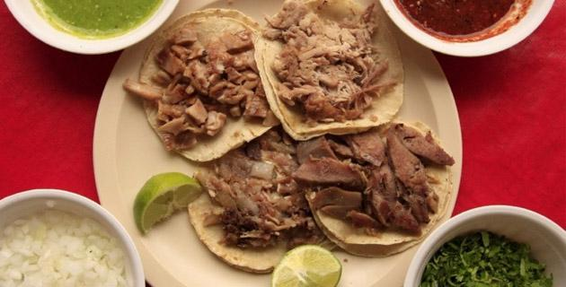
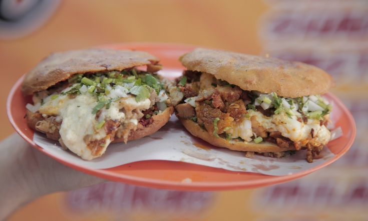
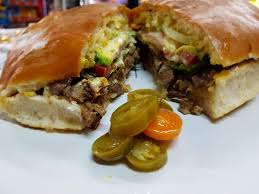
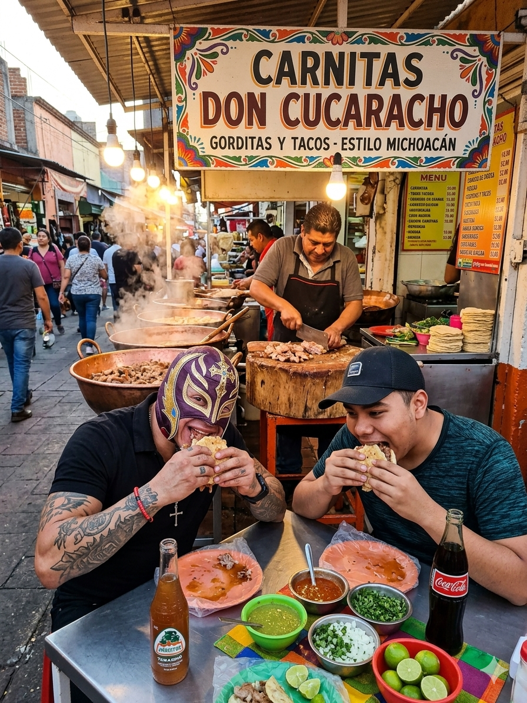
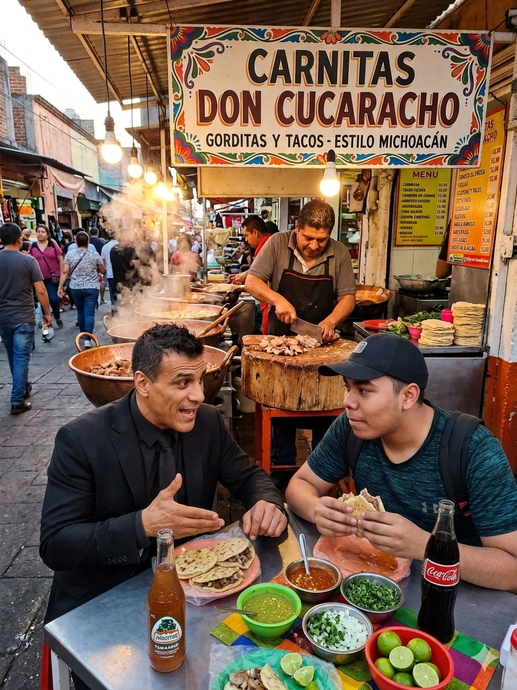

Zacarias Flores del Campo:
El dueño del local es super amable y cotorrea con la gente para tener un ambiene aca bien chido
| Artículo | Precio | Imagen del artículo |
|---|---|---|
| Kilo de Carnitas | $150.00 |  |
| Medio kilo de Carnitas | $80.00 | |
| Tacos de carnitas | $15.00 |  |
| Gorditas de carnitas | $30.00 |  |
| Tortas de carnitas | $40.00 |  |
Todos los productos estan hechos cien por ciento caseros, no usamos ingredientes procesados.
Podemos servir desde pura maciza como la que te gusta, o con cuerito como el que tienes, también contamos con buche.
Desde 2003 trabajando en la preparación de carnitas sabrosas, hemos estados en muchos lados y cada vez que nos hemos cambiado de ubicación nueestros clientes van detrás de nosotros, porque ya conocen nuestro sabor y experiencia, esto demuestra que tenemos algo que la competencia no tiene, y es la confianza y cariño de la gente.
Somos tan tradicionales pero los tiempos cambian, esto implica que ya no es negocio personal, esto ya se hice empresa y contamos con varias sucursales a lo largo de todo San Luis Potosí. A tal punto que hemos tenido varias personas famosas de distintos medios y no solo han venido una vez, sino que se han vuelto clientes constantes.
 |
 |
|---|
El dueño del local es super amable y cotorrea con la gente para tener un ambiene aca bien chido
Hay que ir desde temprano porque las gorditas son las más pedidas y puede que tengas que esperar, pero la espera vale mucho la pena.
Los tacos los atascan de carne y eso es lo más padre pq así uno desayuna bien agusto, y luego en la tele ponen el chavo del 8 y jaja que cotorreo con el Kiko.
Aunque vendan tortas, luego yo me llevo mi bolillo porque la gente se lleva muchas tortas y me quedan unos molletes más buenos que los del festival de molletes del sanborns